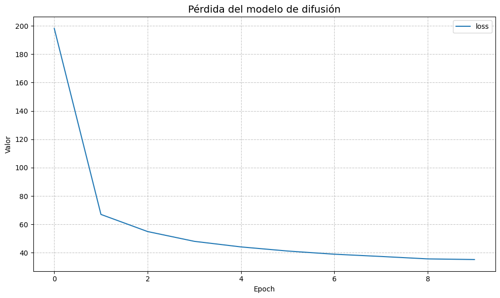
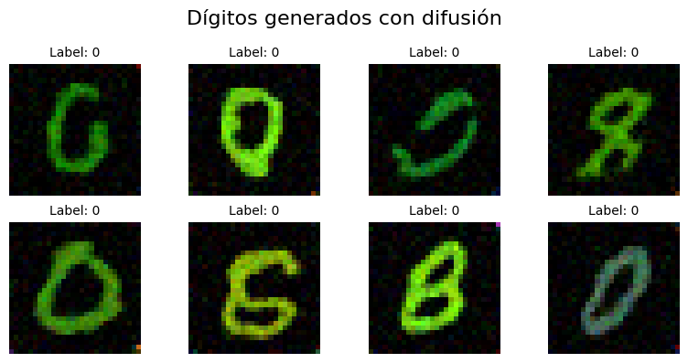
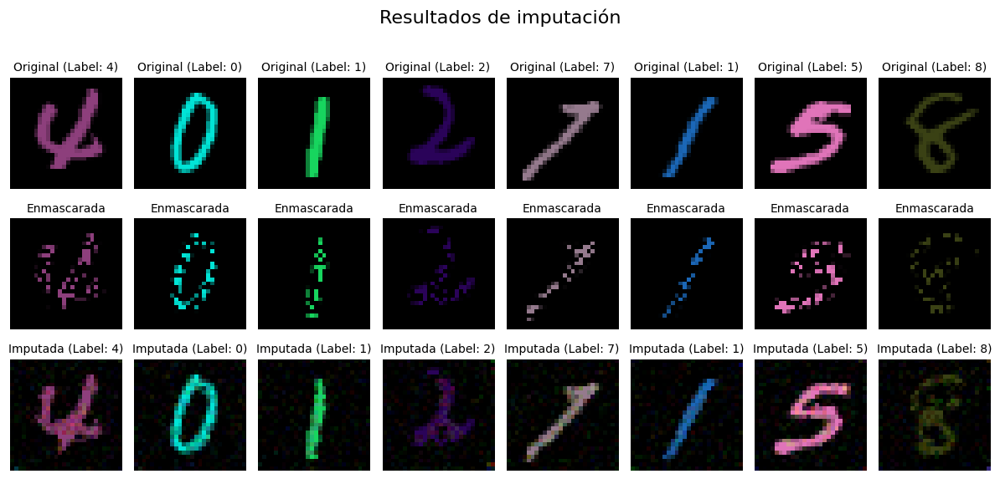

Generative Diffusion: Entrenamiento y Generación con MNIST a Color
Este notebook demuestra cómo utilizar el paquete de difusión generativa desarrollado (generative_diffusion) para:
Cargar y preparar un dataset MNIST a color
Configurar modelo de difusión
Entrenar modelo de difusion
Generar imágenes de dígitos a color de una clase específica
Generar imágenes de dígitos a color de una clase específica con imputación
[ ]:
# pip install generative_diffusion # Instalación el paquete desarrollado
[ ]:
# Por si se quiere usar los archivos locales en vez de el paquete instalado
import sys
import os
sys.path.append(os.path.abspath("..")) # Añadir raíz del proyecto al path
[2]:
# Importar componentes del framework de difusión
from generative_diffusion.utils import *
from generative_diffusion.diffusion import ModelFactory
from generative_diffusion.score_networks import ScoreNet
[3]:
# Configurar parámetros
BATCH_SIZE = 32
N_EPOCHS = 10
LR = 1e-3
1. Cargar y preparar un dataset MNIST a color
[ ]:
print("Preparando dataset MNIST a color...")
data_manager = DatasetManager(root_dir="../data")
# Crear dataset MNIST a color
mnist_train_dataset = data_manager.mnist()
# Crear dataloaders
train_dataloader = data_manager.get_dataloader(dataset=mnist_train_dataset, batch_size=BATCH_SIZE)
# Visualizar un batch de imágenes
show_images(train_dataloader, n_images=8, title="Imágenes del dataset")
2. Configurar el modelo de difusión
[5]:
print("Configurando el modelo de difusión...")
# Crear modelo de difusión utilizando el ModelFactory
diffusion_model = ModelFactory.create(
score_model_class=ScoreNet,
is_conditional=True,
sde_name='ve_sde',
sampler_name='euler_maruyama',
# scheduler_name='cosine',
)
2025-05-10 23:12:58,568 — DiffusionModel — INFO — Modelo de difusión inicializado en dispositivo: cuda
Configurando el modelo de difusión...
3. Entrenar el modelo
[6]:
print(f"Entrenando el modelo por {N_EPOCHS} epochs...")
# Función para mostrar el progreso del entrenamiento
def training_callback(model, epoch, history):
print(f"Epoch {epoch+1}, Loss: {history['loss'][-1]:.6f}")
# Entrenar el modelo
training_history = diffusion_model.train(
dataloader=train_dataloader,
n_epochs=N_EPOCHS,
lr=LR,
checkpoint_interval=5,
callback=training_callback
)
plot_training_history(training_history, title="Pérdida del modelo de difusión")
2025-05-05 00:32:10,807 — DiffusionModel — INFO — Modelo de score inicializado correctamente
2025-05-05 00:32:10,810 — DiffusionModel — INFO — Iniciando entrenamiento por 10 epochs
Entrenando el modelo por 10 epochs...
2025-05-05 00:33:27,796 — DiffusionModel — INFO — Epoch 1/10, Loss: 198.151941
Epoch 1, Loss: 198.151941
2025-05-05 00:34:44,165 — DiffusionModel — INFO — Epoch 2/10, Loss: 67.023044
Epoch 2, Loss: 67.023044
2025-05-05 00:36:00,754 — DiffusionModel — INFO — Epoch 3/10, Loss: 54.943457
Epoch 3, Loss: 54.943457
2025-05-05 00:37:12,827 — DiffusionModel — INFO — Epoch 4/10, Loss: 48.052523
Epoch 4, Loss: 48.052523
2025-05-05 00:38:26,279 — DiffusionModel — INFO — Epoch 5/10, Loss: 44.115630
2025-05-05 00:38:26,389 — DiffusionModel — INFO — Checkpoint guardado en ../checkpoints/Diffusion_model_VESDE_is_conditional_True_checkpoint_epoch_5.pt
Epoch 5, Loss: 44.115630
2025-05-05 00:39:40,922 — DiffusionModel — INFO — Epoch 6/10, Loss: 41.217735
Epoch 6, Loss: 41.217735
2025-05-05 00:40:54,883 — DiffusionModel — INFO — Epoch 7/10, Loss: 38.976167
Epoch 7, Loss: 38.976167
2025-05-05 00:42:09,089 — DiffusionModel — INFO — Epoch 8/10, Loss: 37.386725
Epoch 8, Loss: 37.386725
2025-05-05 00:43:23,036 — DiffusionModel — INFO — Epoch 9/10, Loss: 35.679349
Epoch 9, Loss: 35.679349
2025-05-05 00:44:34,311 — DiffusionModel — INFO — Epoch 10/10, Loss: 35.224183
2025-05-05 00:44:34,412 — DiffusionModel — INFO — Checkpoint guardado en ../checkpoints/Diffusion_model_VESDE_is_conditional_True_checkpoint_epoch_10.pt
2025-05-05 00:44:34,490 — DiffusionModel — INFO — Modelo final guardado en ../checkpoints/Diffusion_model_VESDE_is_conditional_True.pt
Epoch 10, Loss: 35.224183

4. Generar imágenes del dígito especificado
[6]:
# Cargar un modelo pre-entrenado
diffusion_model.load_score_model("../checkpoints/Diffusion_model_VESDE_is_conditional_True.pt")
2025-05-10 23:13:01,757 — DiffusionModel — INFO — Cargando modelo desde ../checkpoints/Diffusion_model_VESDE_is_conditional_True.pt
2025-05-10 23:13:02,402 — DiffusionModel — INFO — Forma de datos cargada: torch.Size([3, 28, 28])
2025-05-10 23:13:02,404 — DiffusionModel — INFO — Parámetros del modelo actualizados desde checkpoint
2025-05-10 23:13:02,417 — DiffusionModel — INFO — Modelo de score inicializado correctamente
2025-05-10 23:13:02,422 — DiffusionModel — INFO — Modelo cargado correctamente
[8]:
DIGIT_CLASS = 0
# Parámetros para generación
N_SAMPLES = 8
N_STEPS = 500
# Crear tensor de condición para el dígito especificado
condition = [DIGIT_CLASS]*N_SAMPLES
[9]:
# Generar imágenes
generated_images, condition = diffusion_model.generate(
n_samples=N_SAMPLES,
condition=condition,
n_steps=N_STEPS
)
# Mostrar imágenes generadas
show_images(generated_images, title="Dígitos generados con difusión", labels=condition)
2025-05-10 23:13:41,581 — DiffusionModel — INFO — Generando 8 muestras con 500 pasos

[10]:
# Evaluar calidad con las métricas implementadas
metrics = diffusion_model.evaluate(
generated_samples=generated_images,
real_dataloader=train_dataloader,
metrics=["fid", "is", "bpd"],
batch_size=BATCH_SIZE,
)
print("\nResultados de calidad:")
print(f"FID: {metrics['fid']:.4f} (menor es mejor)")
print(f"Inception Score: {metrics['is']:.4f} (mayor es mejor)")
print(f"Bits per Dimension: {metrics['bpd']:.4f} (menor es mejor)")
2025-05-10 23:13:44,359 — DiffusionModel — INFO — Recopilando imágenes reales para comparación
2025-05-10 23:13:44,383 — DiffusionModel — INFO — Calculando FID (Fréchet Inception Distance)...
2025-05-10 23:13:50,766 — DiffusionModel — INFO — FID: 207.4813 (menor es mejor)
2025-05-10 23:13:50,766 — DiffusionModel — INFO — Calculando IS (Inception Score)...
2025-05-10 23:13:51,332 — DiffusionModel — INFO — Inception Score: 1.0000 (mayor es mejor)
2025-05-10 23:13:51,332 — DiffusionModel — INFO — Calculando BPD (Bits Per Dimension)...
2025-05-10 23:13:51,451 — DiffusionModel — INFO — BPD: 1.7899 (menor es mejor)
Resultados de calidad:
FID: 207.4813 (menor es mejor)
Inception Score: 1.0000 (mayor es mejor)
Bits per Dimension: 1.7899 (menor es mejor)
5. Generar imágenes de dígitos a color de una clase específica con imputación
[11]:
from generative_diffusion.controllable import random_mask
# Obtener un batch de imágenes del dataloader
images, labels = next(iter(train_dataloader))
images = images[:N_SAMPLES]
labels = labels[:N_SAMPLES]
# mask = center_square_mask(images, keep_ratio=0.4)
# mask = border_mask(images, border_ratio=0.3)
mask = random_mask(images, prob=0.4)
print("Imputando las imágenes enmascaradas...")
# Realizar la imputación
imputed_images, labels = diffusion_model.impute(
image=images,
mask=mask,
condition=labels,
)
# Mostrar resultados de imputación
show_imputation_results(images, mask, imputed_images, original_labels=labels, imputed_labels=labels)
2025-05-10 23:13:51,515 — DiffusionModel — INFO — Generando 8 muestras con 500 pasos
Imputando las imágenes enmascaradas...
